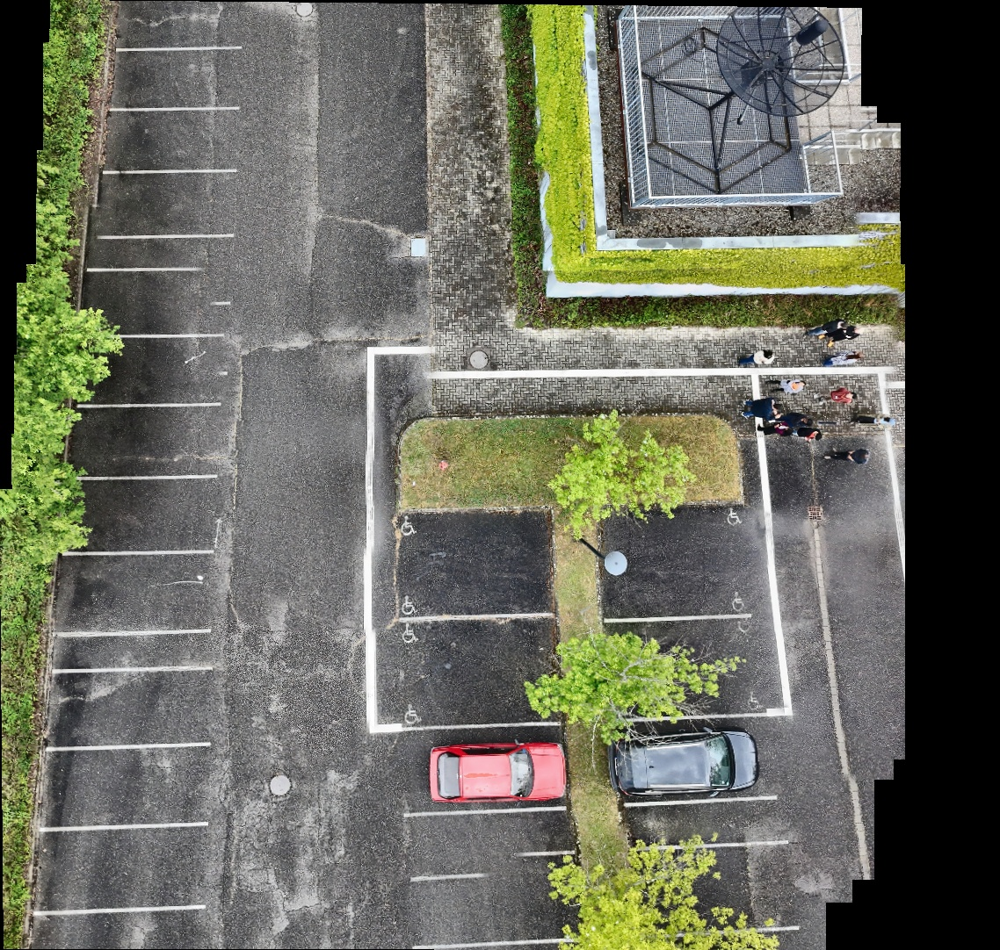

High-Fidelity
Drone Intelligence
Georeferenced orthomosaics and vegetation indices powered by automated computer vision.
Explore DataFlight Analytics
Dataset Overview
Total Images Processed
52 High-Res JPGs
Coverage Area
Lon [7.735, 7.737]
Processing Pipeline
SfM + Feature Matching
GPS Flight Path

Seamless Orthomosaic Viewer
Fully blended panoramic reconstruction using SIFT feature matching and RANSAC homography.
Interactive
Hover to pan and inspect the high-resolution composite.

Vegetation Analysis (NCVI)
Natural Color Vegetation Index highlighting plant health derived from visible light spectrum.
NCVI Heatmap

Analytical Plot